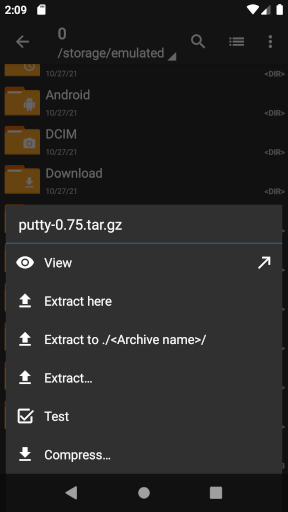

ZArchiver长期使用报告：两年下来哪些功能真离不开
从凑合用的解压工具到处理游戏OBB、备份恢复全靠它，两年下来ZArchiver的体验从“能用来”变成了“离不开”，也藏着几个当初没注意到的小毛病。
当初为什么装——一个7Z包的触发
ZArchiver装到现在快两年了，最初的原因很简单：朋友发来一个7Z格式的资料包，我那台安卓手机自带的文件管理器打不开，搜了下应用商店里评分高的解压工具，直接去下载了安装包装上——当时去查了下它的官网，发现是个专门给安卓做的解压工具，真没觉得，这个“凑合用”的小工具，后来会变成我每天都要碰的常用应用。
变化三连：越用越顺手、越用越烦、离不开的
越用越顺手的几个细节
最开始我跟大多数用户一样，拿到压缩包就全量解压，不管里面是啥。直到有次下了个3GB的游戏压缩包，里面混了一堆汉化补丁、修改器、备份存档，我只想要原版APK和OBB，整包解完占了快半G的存储——这才发现ZArchiver的「部分解压」功能：点进压缩包内部，勾选几个需要的文件，解压的时候只提取选中的，未选中的连碰都不碰。

后来才知道，部分解压还能配合「测试」功能用：先进入压缩包查看内容，勾选需要的文件，点「测试」验证完整性，确认文件没问题再解压——对重要的备份数据来说，这个流程真的稳，不用解完才发现某个文件坏了。
还有个当初没注意的小细节：ZArchiver的报错提示真的太直白了。之前解压遇到“解压失败”只会反复重试，后来去翻了它的文档，才发现每个报错都有明确含义：「Unexpected end of archive」就是下载没下完，「Invalid password」是密码输错了（甚至会提示是不是大小写、全半角错了），「Not enough disk space」就是目标盘满了——不用瞎猜，直接对症解决。

越用越烦的两个老问题
最烦的还是安卓的存储限制——安卓11之后的存储权限收紧，尤其是2024年3月的安全补丁之后，普通授权根本进不了Android/obb和Android/data目录。之前我装安卓游戏全靠ZArchiver直接把OBB放到正确的目录，现在每次都得把手机连电脑，选“文件传输”模式，在电脑上手动复制进去——步骤多了三倍，还得注意别漏了文件夹名和文件名的匹配（之前就因为OBB文件夹名和游戏包名差了一个字符，折腾了半小时才排查出来）。
另一个小问题是分卷包的报错：如果分卷压缩包丢了某一卷，ZArchiver只会报「Cannot find volume …」，不会提示是哪一卷丢了——得自己翻分卷文件列表，一个个数.part1.rar、.part2.rar……太折腾人，尤其是分卷多的时候。
还有个当初以为是bug，后来才知道是硬限制的：ZArchiver不能创建RAR格式的压缩包——因为RAR是专利格式，官方没授权。之前想给朋友发个带恢复记录的RAR包（毕竟RAR的恢复记录修损坏包比ZIP好用），结果只能跑去电脑上用WinRAR，这点到现在还是觉得有点可惜。
离不开的和碰都没碰的
现在完全离不开ZArchiver的功能，其实是处理安卓游戏的OBB文件——不管是解压APK+OBB组合包，还是把OBB放到正确的Android/obb/包名/目录，甚至是排查OBB版本不匹配（APK版本号和OBB文件名里的版本号对不上）、目录没权限这类问题，全靠它。之前试过用其他解压工具，要么找不到OBB在哪，要么放不对目录，没一个能像ZArchiver这样能把整个流程走通的。
还有个离不开的是备份恢复应用数据——换手机的时候，解压之前备份的应用数据压缩包，直接选几个需要的应用文件夹解出来就行，不用整包恢复，省时间省空间。
至于碰都没碰过的功能，就是创建压缩包——虽然ZArchiver能创建ZIP和7Z，但我平时基本都是解压，偶尔需要创建压缩包的时候，要么用系统自带的，要么直接在电脑上弄，这个功能对我来说完全是摆设。
观感修正：当初的三个判断变了
最初我以为ZArchiver只是个“能解压就行”的基础工具——后来才发现它的功能深度远超预期，尤其是部分解压、报错提示、OBB处理这些细节，是很多其他解压工具没有的。
最初我以为安卓存储限制是ZArchiver的bug，去应用商店里骂了一句——后来才知道是安卓系统的硬限制，不是它的锅，但它也没给出更好的解决方案（除了电脑传输），这点还是有点失望。
最初我以为RAR不能创建是个小bug，下次更新就会加——后来才知道是专利问题，根本不可能加，这个判断变了之后，我也就不再纠结了。
去留结论：目前不会卸载，什么信号会换？
现在完全没有卸载ZArchiver的打算——安卓上能稳定处理OBB、支持部分解压、报错提示明确的解压工具，我用下来只有ZArchiver一个，没有替代品。
唯一可能换的信号，是如果安卓系统自带的文件管理器能解决存储限制的问题，或者有个新工具能同时支持RAR创建、绕过存储限制，并且OBB处理也够稳——不过目前来看，这两个条件都很难满足，大概率还得靠它很久。哦对了，这个工具的相关资料我在GitHub、Gitee、GitCode三个仓库都同步了一份，方便不同网络环境的朋友取用。